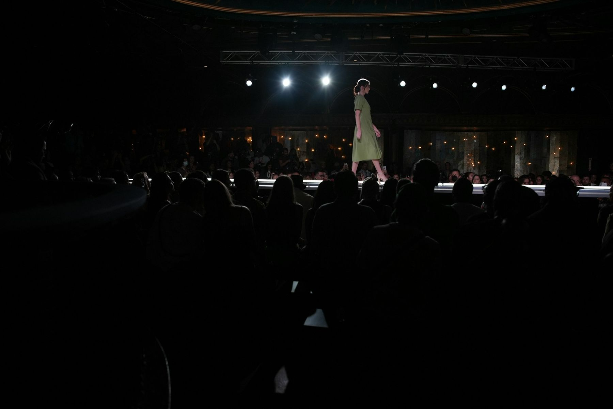
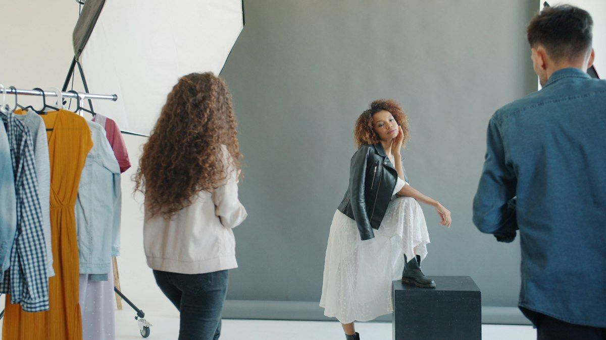
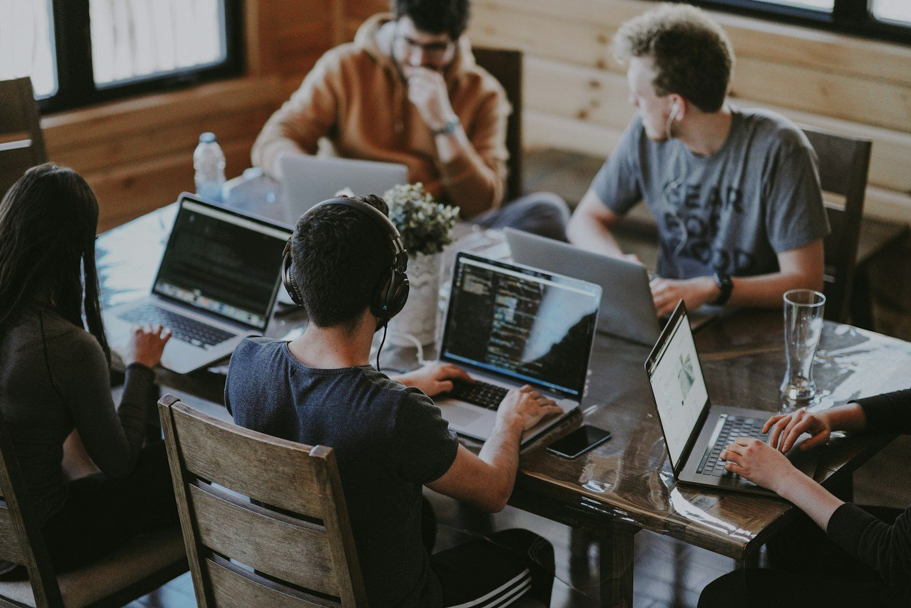
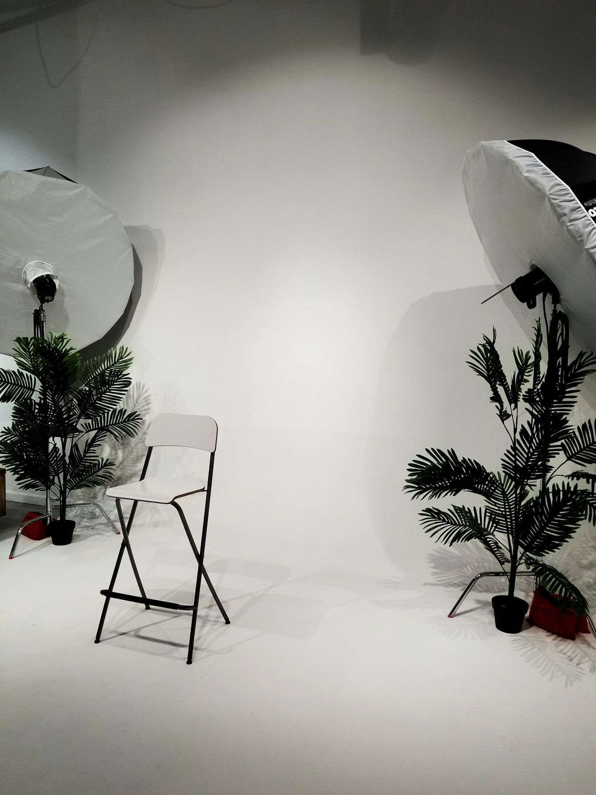
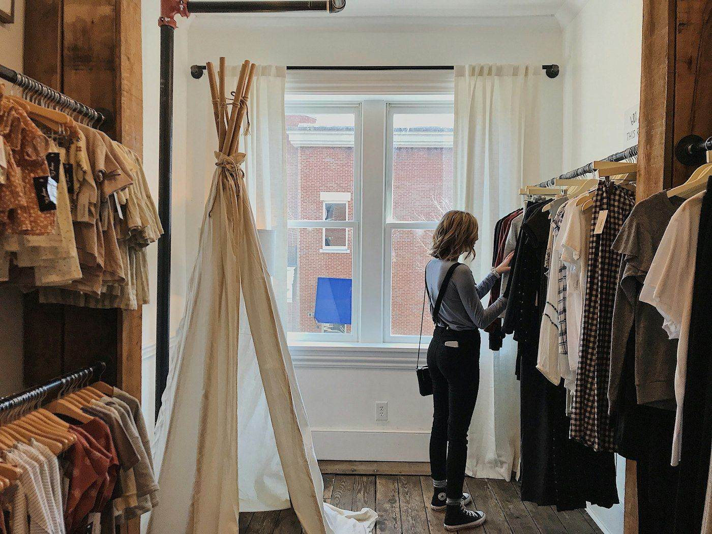
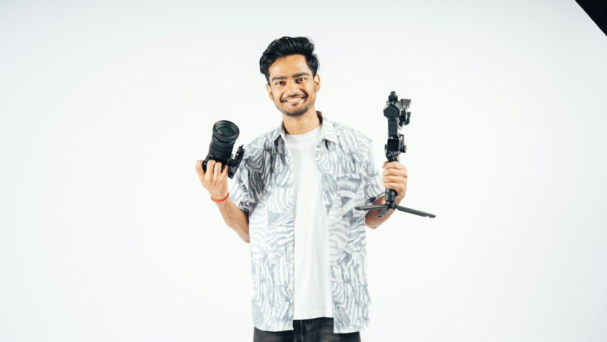
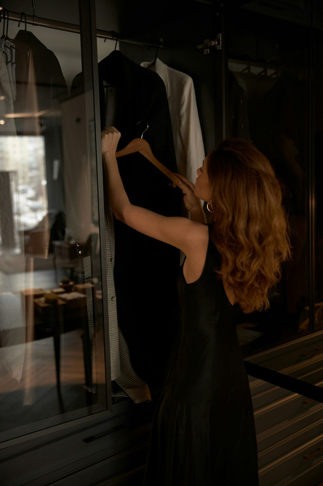
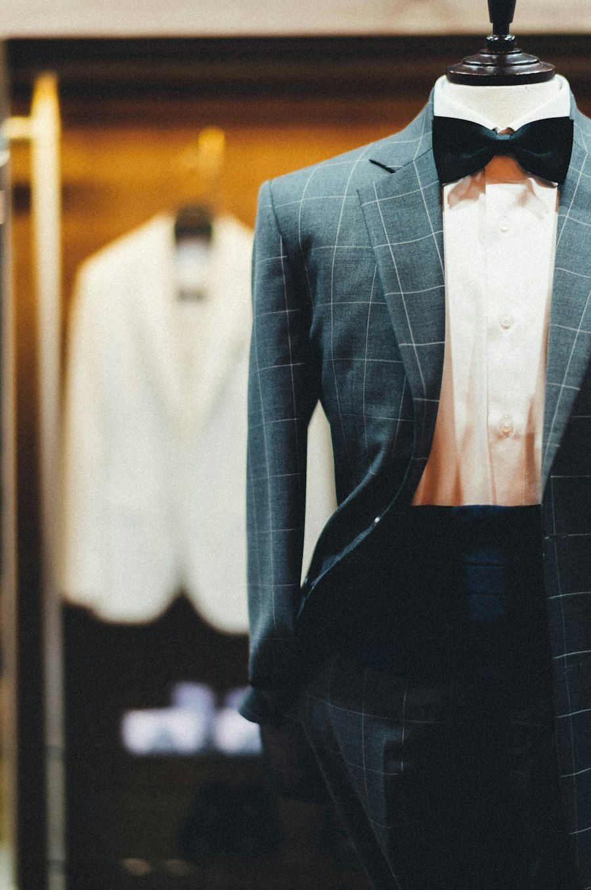
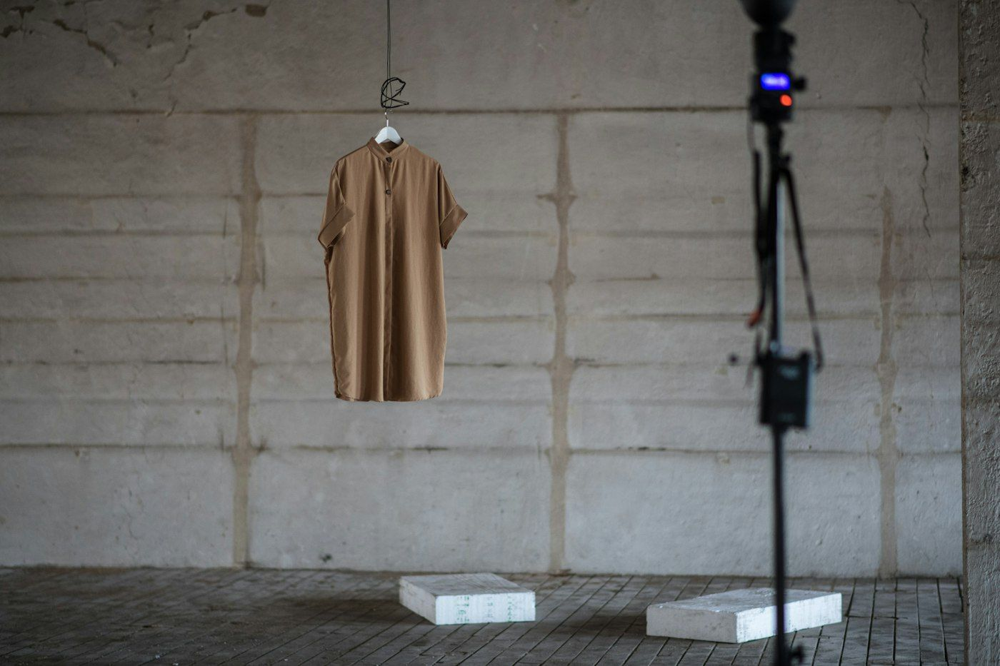
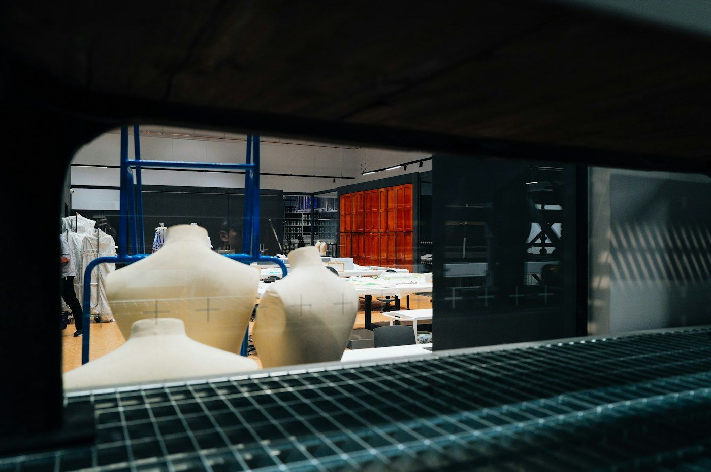

Ethnic wearEdition 01
Rich fabrics and embroidery, given movement.
LastCut is building a new way for fashion brands to create product videos. A great product still needs people to discover it, understand it, see what it can do, and have a reason to come back. That’s the opportunity.
LastCut is more than an AI video tool. It can become a familiar name among the people who need better ways to produce content, and because its public presence is still early, there’s room to shape how people first discover, experience and remember it.

Defining how LastCut looks and sounds, creating content people actually want to watch, establishing distribution channels, and connecting all of it to product adoption.
Not just posting consistently. Building something that compounds.
BrandIdentity & positioning
02 / The brandThe first job is a distinct identity across every touchpoint: positioning, messaging, visual language, tone of voice and creative direction.
The central story is simple. Fashion brands already have product photos. LastCut turns those photos into videos without the traditional production process. That story should come through in the website, social profiles, product demos, campaigns and every piece of content.
Make the value obvious before someone even visits the website.
The people behind LastCut, the product proving itself, and the channels that carry both.

YouTubeStartup documentary
03 / YouTubePeople follow products, but they also follow the people building them. A series documenting the journey: product decisions, new features, customer conversations, experiments, launch days, and the things that don’t go to plan.
The founders can lead if they’re comfortable on camera, but the series shouldn’t depend on them alone. The wider team’s work makes it richer. And every shoot becomes Shorts, Reels, LinkedIn clips and written posts.
One story. Multiple touchpoints. A brand people get to know over time.

InstagramBuilt from zero
04 / InstagramInstagram as the place where the product demonstrates its own value. No generic AI quotes. No endless feature announcements. Content that makes people stop, look, and immediately understand what’s possible.
I’d create the visual system, plan the first batch of posts, manage publishing and community engagement, and use performance data to refine the formats.
A recognisable presence, not simply a filled content calendar.
inLinkedInTeam-led distribution
05 / LinkedInThe most effective company distribution often comes from people sharing useful perspectives in their own voices, not from company pages alone.
I’d study how successful creators use strong hooks, founder-led storytelling, opinion posts and practical carousels, then adapt those approaches to LastCut’s audience rather than copy trends blindly. A manageable calendar, ideas and drafts for each person, and posts that sound like them, not a corporate copywriter. Plus creator collaborations and industry conversations to reach beyond our own network.
Turn the team’s collective knowledge into a distribution advantage.
A launch campaign built on the transformation itself, and the customers, creators and experiments that prove it.

Launch campaignEvery channel
06 / The campaignNot a generic announcement that LastCut is an AI video tool. Take a product photo. Turn it into a video. Show the result. Then repeat it across garments, categories and creative formats until the transformation becomes synonymous with LastCut.
The creative becomes the explanation. Nobody needs to understand the technology to see why the result matters.

Customer storiesProof, not claims
07 / Customer storiesFashion brands and agencies sharing how they use LastCut, what their workflow looked like before, and what has changed. Where outcomes can be measured, I’d capture them: production time, content output, workflow improvements.
Show who it works for, what problem it solves, and why that matters.
inPartnershipsCreators & experts
08 / Creator partnershipsFashion creators, D2C founders, Shopify educators, e-commerce marketers and agency owners, collaborating on something useful rather than paying for reach alone.
Test small partnerships first, then invest more in the formats that generate qualified interest and product adoption. Every collaboration also produces content the brand can keep distributing.

Recurring seriesProduct-led content
09 / The LastCut Fashion LabA recurring series testing LastCut across fashion categories and creative styles. Each edition shows the original product, the template, the final result, and the thinking behind the creative choice.
Rich fabrics and embroidery, given movement.
Fast cuts and attitude for drop culture.

Fall, drape and silhouette, in motion.

Precise, tailored, quietly premium.
The Product Video Clinic
Brands submit product images for selected demonstrations. The audience participates, and we learn which use cases spark the most interest.
AgenciesA separate story
10 / A different approach for agenciesAgencies produce content for several fashion businesses at once. A small brand and an agency have different needs, even with the same product, and that distinction should show up in the content, campaigns and conversion paths.
Search, repurposing and measurement, so attention turns into adoption.

Search & educationIntent-led
11 / Search and educationNot everyone discovers LastCut through a Reel. Some are actively searching for a way to solve a problem.
YouTube tutorials, search-led website content and practical guides that work together. Each piece answers a real question and offers a natural next step: try LastCut.
Content engineRepurposing
12 / One idea. Many channels.LastCut shouldn’t need a brand-new idea for every platform, every day. Every substantial piece of content gets a longer life.
A customer interview becomes a case study, testimonial clips and sales material. A product launch becomes a coordinated campaign. I’d manage the editorial calendar, briefs, scripts, production coordination, repurposing, publishing and performance reviews.
MeasurementFrom attention to adoption
13 / Measure what mattersBrand-building connected to business outcomes, not judged by follower counts alone. Establish a baseline, review regularly, then decide what to improve, stop or scale.
My experience across performance marketing, creative strategy, lead generation and conversion optimisation helps connect these activities rather than treat them as separate functions.
An initial working plan, not a promise of a particular growth number in 30 days.
Understand the product, audiences, customer journey and priorities. Define messaging, channel strategy, creative direction and the first content plan.
Build the Instagram presence, publish the first product demos, set up the LinkedIn system, and start producing YouTube content.
Repurpose across channels, test creative hooks, begin outreach to creators and potential customers, and develop the first campaign assets.
Evaluate what was published, review performance and feedback, find the strongest opportunities, and present a plan for the next stage.
I’d like to join LastCut as a marketing intern for one month, unpaid. Give me the room to build, experiment and execute, and at the end of the month, let the work speak for itself.
Over five years across growth and performance marketing, creative strategy, content, lead generation, and building marketing initiatives from the ground up. What draws me to LastCut is bringing those together in an early-stage company with room to experiment and take ownership.
No grand promises. No asking you to believe in a presentation. If the work shows I can contribute, we talk about what comes next.